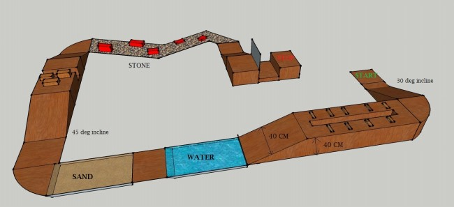

Problem Statment
Build a manual wired robot that can travel difficult terrains and explore the land of ruins.
GAMEPLAY:
Bot has to start from start point, climb up the terrain(inclination of terrain will be 30 degree). Then cross the narrow bridge with hurdles present on surface.width of bridge will be 40 cm and 5 cm gap in center. Then cross the water zone(depth 2cm) and sand zone. After that climb up the terrain of inclination 45 degree and fill the path gaps and cross the land without touching red bricks. Then climb up the terrain of 45 degree and open the gate and make the path to finish pointRules:
General rules
- > The maximum team size is 4.
- > They must all be present students of an engineering institution. They may or may not be from the same institute.
- > No participant can be a member of two teams. No two teams can share the same robot.
- > In case of any component failure or power failure or any other faults that appear on the robot during its actual run, for which the participants are responsible, they may choose to take a "restart", which will cause loss in points.
- > Team members will not be allowed to touch any part of arena, only organizer are allowed to handle the arena in any situation, the team will be disqualified whose member found touching arena.
- > You are not allowed to make any changes to your bot once the game has started.
- > The event co-ordinator is free to make any change to the above rules at any time. Any such change will be duly notified to the participants as and when required. The decision of the event coordinator will be final and binding.
- > Participants must carry valid college id proof.
Timing rules
- > 5 minutes are given to complete the task.
- > Extra 2 minutes are given with some point deduction.
Event Head:
Vikash Singh: +91-9903812153
Email:-vikashsinghnsec@gmail.com
Siddharth Gandhi +91-9681481214
Email:-gandhi.siddharth91@gmail.com
Robot Specification
- > Dimensions of the robot should not exceed 30cm X 30cm X 30cm.
- > The robot can use on-board or external power supply.
- > The Voltage anywhere in the circuit should not exceed 230V AC, however 220V 50Hz AC supply will be provided to all participants in form of standard 3-pin sockets on extension boards. Any other form of electrical power required (DC battery power for example) will have to produce by the participants themselves.
- > The robot cannot be constructed using readymade Lego kits or any readymade mechanisms. But can use readymade gear assemblies.
- > Robot can be wired or wireless controlled but AVENIR 2013 will not be responsible for any interference caused. In case of wired, the wire should remain slack throughout the game.
- > The weight of robot must not exceed 4kg.
Arena:
Arena detail
Bot has to start from start point, climb up the terrain(inclination of terrain will be 30 degree). Then cross the narrow bridge with hurdles present on surface.width of bridge will be 40 cm and 5 cm gap in center. Then cross the water zone(depth 2cm) and sand zone. After that climb up the terrain of inclination 45 degree and fill the path gaps and cross the land without touching red bricks. Then climb up the terrain of 45 degree and open the gate and make the path to finish point.
